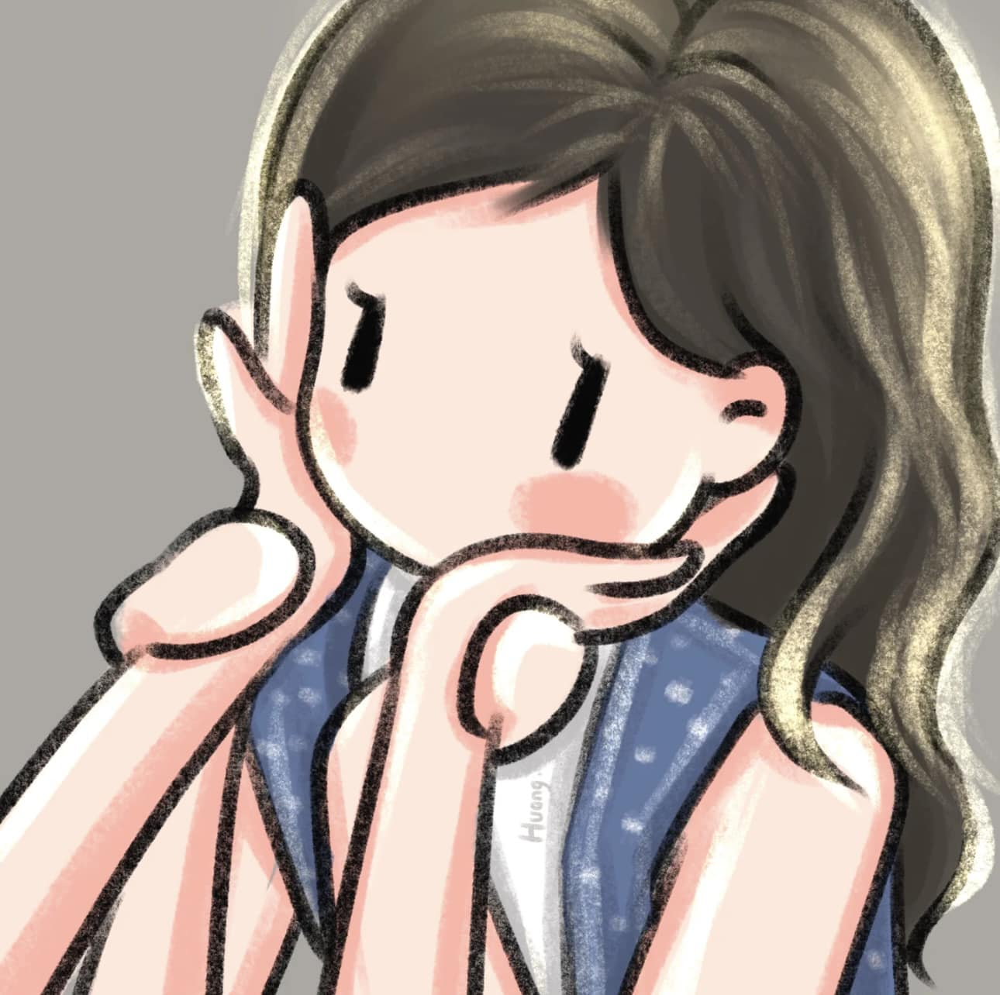

Goood Morning Babycakessss Ko ♥♥♥ Take note that this is "also" temporary.Since that we are doing a one-way communication, i do not intend to continue to create a mini social media for us for the meantime. Saka na lang po natin gawin yun, na you can communicate back to me, pag pwede na po tayo mag contact sa isa't isa. Pero sa ngayon eto lang po muna. Kahit ako lang muna mag sesend ng message sayo, at basahin mo po dito sa website. Although, napaka basic pa neto. Hahahaha. Pagalingin Nawa po ikawww 🙏🙏🙏 sobrang lamig ng panahon ngayon.
Hello Again Babycakess and Honeybunch koo Today is another day of missing you.Since that we are doing a one-way communication, i do not intend to continue to create a mini social media for us for the meantime. alam mo naiinis ako kay tong. kasi mag DSWD dapat kami today, kaso late na ko nagising. Sabe ba naman nya puyat kase ng puyat, sino ba yan. Nag haha react na lang ako tas sabe ko kaka code kaya napuyat. Alam na kasi nila na no-comm tayo. Pero si tong yung mga tinginan at chat nya sakin ayaw maniwala kainis na bata laging nag iimbestiga XD ayan convo namin hahahaha. wag na wag mo bibigay kahit kanino tong link ng website ah. d pa kase encrypted e. pero later lalagyan ko na po.
Hi there, my Babycakes! Miss na kitaaa talaga e. Huhu so nag record ulit me ng voice message. Pakinggan mo po bago ka mag sleep ahahaha alam ko mamaya kapa matutulog e. Puyat ka ng puyat. At saka kung natuloy man general cleaning mo sana okay ka lang po, hindi ka masyado napagod or natrigger asthma mo. sana gumana tong audio sa browser ng iphone mo.
Pag nag ooverthink ka po ulit, chat mo lang ako ha. I'm always here for you, I'll never get tired of saying that with God's help I will always love you and will never hurt you, but will make you smile forever. ♥♥
John Angelo Alabarca December 5, 2024
Isang Magandang Ikaw Sa Umaga, Aking Mahal♥♥♥ Salamat sa Dios, sa panibagong umaga hehe.Always pray when you're sad and about to cry. Then reach me out, pag sobrang lungkot and vulnerable mo po. Lagi ako makikinig sa mga sasabihin mo, at wag kang matakot na baka magsawa ako dahil paulit ulit. Hindi po ako magsasawang mag explain sayo, mag bigay ng assurance, kung gaano po kita ka mahal 😘😘. I love youuu very much, my Honeybunch ❣️❣️❣️
John Angelo Alabarca December 6, 2024
>Good Morning Po Honeybunch Ko❣️❣️❣️ Sorry medyo na late lang po ako ng update dito sa website. Nakatulog ulit kasi ako po e, nagising nako kaninang umaga.Sana okay ka lang po, at hindi ka nag ooverthink. Ayun medyo may konting lungkot kasi kailangan na talaga nating magtiis na no-contact. Gusto ko lang din po ipaalala sayo na sa awa't tulong ng Dios, lagi lagi po kitang Minamahal🥰🥰 I love you so muchhh po babyycakes, kain ka lagi madami ha tas yung mga gamot mo po at vits wag kalimutan. Samahan Nawa po 💖💖🙏🏼🙏🏼 God Willing 🙏🏼
ᴉ,ɯ sɐp˙ ᴉ ɯᴉss n :(((( grabe kaka update ko pa lang ng website nakita mo agad XD
John Angelo Alabarca December 7, 2024
Goood Morning Po Babyyyyyyy!!!!❣️❣️❣️ Sorry super late na naka update dito. Napasarap sleep ko kagabe ahahaha.Papunta na po pala ako ng lokal, dalo na po me ng WS at TG loobin. Naka white shirt lang din po ako tas di po ako nag ahit, and ready na din po wallpaper ko ahahaha. Thank you po talaga kagabi. Yung last Bio ko na yun wala namang sad emoji dun e, pero ang galing mooo na feel mong malungkot ako XD. Kilalang kilala mo na ko e no. I love you so muchhh babyycakess kooo. 😘😘 Samahan ka po Nawa sa maghapon 🙏🏼🙏🏼 wag masyado magpagod ah, pahinga pahinga din. Tas yung mga gamot mooo inhaler vits etc. At kumain ng madaming healthy foodsss 🥰🥰
John Angelo Alabarca December 8, 2024 | 11:16pm
Hello po, Gooood Evening Babyyycakessss♥♥♥ Nakakapagod po today ang daming ganap kaya d po ako agad nakapag update dito sa website.Kakauwi ko lang po actually. Galing basketball po. Pero kaninang umaga nag photoshoot kame sa may Ninoy Aquino Wildlife and parks po. Then inabot kame ng ulan nagpatila kame sa may ever commonwealth dun na din nag lunch, tapos diretso sa may intramuros yung tabi ng ilog yung maraming kainan. Tas kinagabihan basketball naman. Nakalaro naman si bro. Ralf, ang galing po nya mag basketball, natalo kame nung last game dahil sa kanya e, kalaban kase namin sya. I am hoping na you are fine po and doing well. Samahan ka pong palagi sa mga duty mo po 🙏🏼🙏🏼. Always eat healthy foods kain lang po ng kain XD. Mahal na mahal po kitang palagi awat tulong 🥰🥰♥♥
John Angelo Alabarca December 9, 2024 | 10:55pm
Good evening po. Sana okay ka lang po :( Gusto ko sana itanong anong nangyari. Bakit po nabawasan yung post mo sa IGFrom 190 to 180. Tapos inalis mo po yung BIO. Nung isang araw pa ko nalulungkot kasi hindi kita nakakausap, pero dahil nag hohold back ka, nag hohold back din ako 😥😥 I'm sorry kung di ako agad nag reply sa BIO kasi lalo lang ako nalulungkot, kaya gusto ko na sana na wag na muna mag reply. Pero kung nagbago na po isip mo, okay lang din. Eto talaga yung inaalala ko. Hindi ko alam kung bakit. Bigla na nga ko nawalan ng gana mag basketball simula nung nakalaro ko si ralf. Na realize ko na mas maraming magagaling out there. Hindi lang sa basketball, pati sa real life. Kaya please tell me ahead of time, kung sakaling na fall out of love ka na sakin, at lagi ka naman pong malayang makapamili, wala ka pong obligasyon sakin... Sana okay ka lang po at di ka nag ooverthink. :'( Ano ma't ano pang mangyari, lagi lagi po kitang minamahal kahit ang hirap sa sitwasyon natin, na dapat magpasakop. 😥😥 See you soon loobin sa kasal po, kung makakapunta ka po. 😔😔
John Angelo Alabarca December 10, 2024 | 4:14pm
Good Afternoon po Babyycakesss Koo 🥺🥺 I just want to say na thank you, na you still there, kahit nasaktan kita.I'm really sorry, sa nagawa kopo. Naiparamdam ko sayo yung mga insecurities mo from past. Alam mo naman pong mahal na mahal kita. Sana mag heal ka na po emotionally. :( And I know that these words are not enough to prove that. Kaya I will always pray na sana maayos pa tayo, loobin sa hinaharap. :( I don't want to give up. Please don't give up on me. Am sorry if I look like a pathetic. 😥 I love you always like what I'm saying from the very beginning. 😥♥♥
John Angelo Alabarca >December 11, 2024 | 12:42pm
Helloo Po Honeybunch Ko🥰🥰 Na trigger na naman asthma moooo hays. Pagalingin Nawa po.🙏🙏Palakas ka po, kain ka madami kung makakaya mo po, para kahit papano labanan mo kung kaya mo lang po ah wag ipilit baka kapusin ka ng hininga. Yung Code Geass kahit ako na lang po muna manonood. Ipahinga mo nalang muna yung katawan mo po haaa. Para d ka na masyado mapagod po. Konting review ko lang sa Code Geass from ep1 to ep3, ayun interesting yung plot kase sabe mo madame pa mangyayari, saka mahilig din ako sa action okay din animation. I'll watch ep4 later maybe two to three eps a day kung kaya po.🥰 Pagaliiiing ka po. Then yung no-contact natin baka pwede i extend huhu. May sakit ka na naman ihhh :(((( Awat tulong po ng Dios, palagi kitang minamahal, babycakess q.😘😘 Please take care of yourself while I'm not around. I love you so much.

John Angelo Alabarca December 12, 2024 | 9:24am
Good Morning My Princess 😥♥♥ I don't know If I still deserve you. I am now starting to question myself, kagabi ako yung nagdadahilan nag eexcuse naipasa ko pa sayo na kunyari logical but in reality it is not.Sinabihan kitang duda ka sa sakin, wala kang tiwala, tapos inakusahan pa kitang ginagawa mong excuse yung sarili mo, pero in reality, it is just your insecurities that kicks in. Pero ako talaga yung dapat kwestyunin yung sarili ko. Despite of the fact that you are hurting, you are crying, you're still trying to understand me, which I don't deserve. 😥😥 Lagi ko pa naman sinasabe na gusto kita pasayahin, matulungan ka sa paglilingkod mo, pero ngayon ngang wala pang tayo, ganito na yung naging epekto ko sayo. Failed na agad ako :(((( I am really sad. Pero wag ka po mag overthin, don't get me wrong po, I am really okay with us, ours. Hindi ako galit sayo Hindi ako nagalit sayo kagabi baby, yung mga words ko kagabi, due to emotionally and physically tired I can't think of anything what is right and what is wrong. Kaya I am really sorry for being a jerk (which I always am). Napaka swerte ko sayo, napakalalim ng emotionally intelligence mo. Sobrang mahal na mahal kita. To the point na gusto ko na sanang ilayo yung sarili ko sayo, para hindi ka na masktan, hindi ka na umiyak. Parang a brittle glass na pag hinawakan ko e mababasag lang. Mas gusto ko nalang tignan ka sa malayo, i-admire, mahalin ng hindi ka nasasaktan. Pero gusto kong i-workout tong mga flaws ko, ayokong lumayo sayo T_T. Mahal kita e. These words are not enough, but I am trying to express myself to the fullest. Napaka buti mo po baby. :(((( I don't deserve your love, I don't deserve you. I am really sorry for what I did last night :((((
John Angelo Alabarca December 13, 2024 | 10:40pm
Goood Night Na Babyyycakes Kooo 😘😘 Di na po muna tayo mag llate night talks huhu, pagaling ka po muna.Sorry napupuyat kita netong mga nagdaang araw, tapos na stress ka pa sakin. Nasaktan kita, nalungkot ka. Isa din sa mga dahilan yun kung bakit ka po nanghihina :(((. I'm really sorry ulit babyyycakes ko :( Tapos tom di na muna tayo magkaka chat kasi TG. Loobin apalit po kami, pinilit ako ni Harry e ayoko na din tumanggi baka isipin umiiwas ako dahil sayo. Pagalingin Nawa po ikaw Honeybunch ko🙏🙏 Mamimiss kita, icchat pa din kita bukas loobin ahahaha. Okay lang kahit di ka po mag replyyyy. Pero i off mo yung notif sa IG kasi mag uupdate ako ng mag uupdate sayo bukas. Okay lang po kahit di ka na mag seen or reply. Hehe. Goood night na babyyy, palakas ka po haaaa. Yung inhaler mo tas mga gamot po. Pilitin mo din kumain kahit kontiii haaa. Mahal na mahal kitang palagi awat tulong ng Dios baby kooo 😘😘 ❤️💗💖I LOVE YOUUUU MY PRINCESS💖💗❤️
John Angelo Alabarca December 14, 2024 | 12:46pm
Good Aftiee Honeybunch Koooo💖💗 Rest well for today haaa, wag na po masyadong magpagod at magpuyat po.Starting today baby, kumain ka on time po at mga healthy foods lang muna. Iwas muna sa mga junk foods at fast food hanggat maaari. Tapos inom po ng tubig. Wag kakalimutan mag inhaler at yung mga vitamins. Tapos wag na wag na din magpupuyat. Wag ka na din maliligo ng gabi, mag hilamos ka nalang po yung walang scent. At siyempre unang una, higit sa lahat humingi po tayo ng awat tulong sa Dios na palakasin ka po at pagalingin 🙏🙏 May 1 week ka pa po para gawin yan strictly ah. Lalo na yung pagpupuyat at pagligo sa madaling araw. Gawin mo yan baby haaa please. Para loobin sa SPBB maka duty kana po at okay na pakiramdam mo. Nag update na me bago umalis kasi d nako makaka update maya madaling araw na kami makaka uwi po. Mahal na mahal kita Babyyycakessss♥♥♥ I love youuu po alwaysss, Samahan Nawa tayong palagi ng Dios 💖🙏🙏💗 Loobin Ng Dios, Sa Tahanang Aalagaan Kita Pag May Sakit Ka💖💖
John Angelo Alabarca December 15, 2024 | 9:23am
Good Morning Babyyycakessss♥♥♥ Dec 15 na huhu, lapit na mag Dec 17, na dapat mag no-contact na us, and purely dito na sa Website.Magandang ikaw po sa umaga 💖💖 I am praying and hoping na sana gumaling ka po at lumakas lakas ka bago mag SPBB. Para maka duty ka na po ulit sa Quiapo, babyy. Kain ka na po almusal pagkagising mo ha. Sobrang mahal na mahal po kita wag mo po papabayaan sarili mo, mamahalin pa kita babyyyy 🙏💗 May GA po pala kami later, mga Zone 2 sa N.Panaderos po. 11am start. Kaso di pa ko nakakadalo ng WS kaya pag dating ng 2:30pm mag WS muna ko XD, tas balik GA after. ADVANCE HAPPS SPBB PO BABYYYYCAKESSS KOOOO💖💗!!!! Samahan Nawa po tayo sa buong maghapon at sa mga darating pang araw. I love you so much my hottie princess🤤🤤🥰🥰😘
John Angelo Alabarca December 16, 2024 | 6:46pm
Haloooooo BabbyyCakess Koooo💖💗 Mabilisan lang po ito kasi mag SKAP kami later ahahahaha. D na ko makakaupdate mamaya.Madaling araw na siguro kami makakauwi neto. Good evening babyycakess. Although pwede ko naman po i chat ito kasi nagkakausap pa naman tayo e. Pero kasi gusto ko everyday may diary ako :D. Sana po umokay na pakiramdam mo babyyyy kooo. Di kita mareplyan sa chat mo kasi tinatype ko ito XD. At yung about kay mama mo, okay lang po yun baby, ako na bahal loobin sa hinaharap. At mag focus ka po muna sa pagpapagaling sa sakit mo babyyy. Akala ko before SPBB magiging okay ka na ihhh. Sundin mo na po yung bagong doctor mo ah. At least specialist po talaga yan. May awa po ang Dios babyyy. Ayuuuun halaaaa 7pm usapan namin nila kuya ry XD. Sobrang mahal na mahal po kita babyyycakesss kooo. Chat chat na ulit tayo later until December 17 midnight huhuhu. :((((( >Although di pa tayo nagkikita ulit XD I love you so muchhhh your highness 🤤🥰🥰
John Angelo Alabarca December 17, 2024 | 12:04pm
Gooood Afternoon Your Highness🥰😍💗😽 Sana po ay bumuti na ang pakiramdam mo todayyyy. Sana effective yung gamot, awat tulong ng Dios🙏🙏Halooo there babyyy sa bulacan, meycauayan XD. Miss na kitaaaa. Feeling ko ang distant natin sa isa't isa :(((( Kasi di na tayo nagkaka chat ng matagal, di na din nagccalls huhu. Pero okay lang po para naman sa health mo yan e. Focus ka muna sa pagpapagaling po, magpalakas ka babyyy ha. Pray po tayo palagi na pagalingin ka po, at laging sumunod sa doctor haaa. Inumin on time yung mga gamot na nireseta. December 17 na today :((((( Pano yan babyyy last na chat na ba natin sa IG? Parang ayoko pa kasi nga may sakit ka pa. Gusto ko mang hingi ng update sayo hays. 😿😢😥 Pwede naman siguro extend until tomorrow XD Pero dapat before SPBB mag no-contact na po tayooo. Gusto ko mag focus ka na muna sa health mo and sa sa duties mo babyyy. So ayuun, basta pagaling ka po Honeybunch ko. May awa po ang Dios🙏🙏 God willing, magluluto tayo ganito 🙏🥰😍😘❤️ I love you so much my princess 🥰😘
John Angelo Alabarca December 18, 2024 | 11:56pm
Good evening Babyyycakesss kooo This is our last day na :(((I am really sad right now baby. I dont know what to say but we need to have discipline this time po. Dapat talaga no-contact na. Sobrang mamimiss po kita. Lagi lagi ka pong mag iingat ha. Alam mo namang mahal na mahal kita sa awat tulong po ng Dios. I love you so much babyycakess ko, Honeybunch ko. Loobin ng Dios sa panahong pwede naaaa, hintayin mo po ako babyy koooo
John Angelo Alabarca December 19, 2024 | 6:26pm
I Miss You Babyyycakesss Ko 😢😥 It feels like forever since we last talked yesterday.Parang ang tagal tagal na natin di nag uusap :(( Miss na kita agad. Now lang din po ako naka update kase lunch nako nagising. Pag malungkot talaga ako nag ooversleeping ako. Sana pagaling na po yung asthma mo at mawala na hingal mo para ma-check up ka na ng doctor mo tom po loobin. Inom lagi ng gamot on time haaa. Wag papalipas ng gutom laging kumain ng masustansya at damihan mo kung kaya mo po kumain ng madami. Wag na wag na din magpupuyat babyy haa. At una sa lahat lagi ka po mag pray babyycakes koooo. I love you so muchhh always to the moon and back 😘❤️ Mahal na mahal kita Honeybunch kooo. Hindi Niya tayo pababayaan, awat tulong Niya 🙏🥰
John Angelo Alabarca December 20, 2024 | 3:40pm
Good Afternoon Your Highness🥰😍💗😽 I've been doing this website since 5am XD.Medyo nakakapagod po XD. Sana okay ka lang ngayon dyan babyyy. Kumusta na kaya results ng check up mo today? I am hoping and praying na okay na po sana ikaw. At mabigyan ka na ng tamang gamot ng bagong doctor mo. Wag ka na din papalit palit ng doctor babyycakess ko. At lagi na susundin yung sasabihin ng doctor ah. Siyempre una pa din ang panalangin. 🙏🙏 Yeyyyy it's day 1 na laterrr. Happy SPBB babyycakess koo. I don't know kung nakapunta ka ng Quiapo today. Pero kung di po kaya ng katawan mo sana ipahinga mo nalang po muna, pero may awa naman ang Dios babyy. Kung ano ipapayo ng doctor wag makulit ah XD bibigwasan kita. Iwas iwasan na pagpupuyat.Namimiss na kita sobra, pero need natin magtiis muna babyy ha. Wag ka po sana mag overthink. Etong website na to temporary lang din ahahaha. Wala pa to functionality e, di kapa makakapindot dito XD. Lalagyan ko to ng mga reacts loobin :DHelloo there aking prinesa, always pray, lagi magtagubilin haaa. Kapag nag ooverthink ka po, luhod po muna at pag di mo na talaga matiis contact me ha. Wag mo isipin na natitiis kita, kasi nga ngayon pa lang gustong gusto na kita i-chat ih. I am just holding back. After SPBB loobin or mamaya siguro nonood ako ng code geass paisa isang episode :DLagi mo po tatandaan na sa awat tulong ng Dios mahal na mahal po kitaaaaa.😘😘❤️ Sa kapahintulutan ng Dios, magkikita tayo at magkakausap ulit ng wala ng restrictions🙏❤️🙏❤️ I love you alwayss my princess🤤😘 I miss you malala :(((
John Angelo Alabarca December 21, 2024 | 8:45am
Hiiii poo, Gooood Morning My Princess ❤️😘🥰 Today is my Mama's 57th Birthday! Ours in the future God Willing 😁😇😍 Ayun makakapag apalit sila later loobin may two extra slot kasi si joseph. Dapat sa akin yun kaso wala akong kasama :(( Yayain sana kita kaso d naman pwede huhu. 🥺 At saka may sakit ka pa di ka din makakabyahe pa ng malayo. Pero nakita ko stories mo sa IG naka duty ka na pala sa Quiapo? Yeyyyy. Salamat sa Dios🙏🙏 Mabuti naman at pinayagan ka na po ng doctor mo bumyahe ulit. At base sa looks mo mukhang okay ka na po. Sana magtuloy tuloy na pag galing mo sa asthma babyycakes ko loobin 🙏🥰. Wag na masyado magpupuyat ha, baka may iba ka ng ka-late night talks 🥺🥺 Medyo malungkot lang me baby, ay di pala medyo malungkot talaga kagabi kasi wala pa din name ko sa list 🥺. Pero ang ang ganda ng paksa e, Dios naman ang gumagawa ng kahatulan kaya ayun dapat hindi malungkot. Kundi matakot kasi Siya naman gumagawa ng kagandahang loob, kahatulan at katuwiran. 🙠Namimiss na po kita, buti na lang at nag stories ka sa IG mo. Ang ganda ganda mo babbyyy ko. Baka madami na naman umaaligid sayo. Ay hindi pala baka yun, lagi lagi naman may nagpapapansin sayo.🥺🥺 Sana nasa maayos ka pong kalagayan palagi Honeybunch kooo. Wag ka na po sana mag ooverthink ng malala ha. Awat tulong ng Dios nandito lang po ako palagi. Nalulungkot ako from time to time, pero hindi naman tayo kinukulang sa paalala, sa aral, para sumaya ulit 😇 Kahit na sobrang gustong gusto na kita makita. Loobin magkikita naman tayo sa January 12 😍😘❤️ Sa awa at tulong po ng Dios, palagi kitang mamahalin babyy ko. I love you so much and I miss you so much rn. :((🥺🥺 Alway be happy babyycakes ko haaaa, wag na po ikaw malulungkotttt. Wag ka napo iiyaaak haaaa. Pray po lagiiii, tuhod at sahig. 🙏😇
Sa Kalooban Ng Dios At Sa Awa't Tulong Niya🙏
At saka finding someone else is definitely not an option, because no one is better than you. You're the best I've found. 🥰❤️😇
John Angelo Alabarca December 22, 2024 | 11:48am
Magandang Araw Po Babyyycakes Koooo💖💗 ♥♥♥ Mahal na mahal po kita :( ğŸ˜ğŸ˜¢Sobra po akong nababalisa ngayon. Pagod lang din siguro tas wala pang tulog. Ang dami lang din pong sigurong nangyari kagabe hanggang ngayon. Sobra po akong nalulungkot umiiyak ako. ğŸ˜ğŸ˜¢ Pero wag ka po mag alala hindi po ako nag ooverthink about sayo or satin, kaya please wag na wag mo po ako icchat muna. Naiyak ko naman na lahat kaya medyo gumagaan na pakiramdam ko. Nagsimula to nung nabanggit ni Kuya yung about sa mga suspendido, yung mga humihiling pero hindi naman sumusunod sa payo, mga hindi pinapakinggan ng Dios 😠Nalungkot ako, na isa ako dun e dahil nga S din ako. Kaya excited ako sa magiging paksa mamaya na medyo kinakabahan na ewan basta. Tapos non nung bago mag closing prayer, yung awitan na, si Howie nag collapse. As in napaupo sya nawalan ng malay. Sinasampal sampal namin sya ginigising, awa naman ng Dios, umokay siya, sobrang dami din kasing tao dun sa indoc room kaya konti oxygen. After non d na kame nakatulog kase magsusundo kame ng kapatid na officer galing visayas, sinabihan kame ni kuya marlon de leon. 3am umalis na kame bumyahe na papuntang NAIA terminal 2. Then hinatid namin yung mga kabataang officer sa visayas tatlo silang lalake sa apalit byahe na naman ako nag drive. So nung nahatid na namin around 8am na. Kasi naligaw pa kami sa hotel na tutuluyan nila. Kaya ngayon lang po kami nakauwi around 11am. Sobrang nakakapagod at wala pang tulog kaya pag uwi ko umiyak muna ko ng umiyak sobra akong emotional right now. Naiisip ko baka di nako pinapakinggan ng Dios dahil S ako. Hindi ko po alam babyy, iniisip ko na baka hindi ka na Niya ibigay sakin, ğŸ˜ğŸ˜¢. Pero umookay na po ako alam ko naman na may mas malalim pang mga maipapaliwanag na paksa mamayang 3rd day loobin. Basta wag na wag mo po ako icchat babyy haa, wag natin hayaang maputol yung no-contact natin. Kaya ko po babyyy awat tulong. Patawarin sana ako ng Dios kung nakakaisip ako ng ganto, gusto ko na mapakinggan yung magiging paksa later para maitama na yung pag iisip ko. At hindi pa rin nagbabago yung pagmamahal ko sayo. Sobrang mahal na mahal kita babyyy ko. :(((💖💗😢😢 Alam ko naman po at nauunawaan na Siya ang gumagawa ng kagandahang loob, kahatulan at katuwiran, at kung ano pa din ang magiging kalooban Niya, sa akin, sayo, at sa atin. Kailangan ko lang maliwanagan sa magiging paksa. Very striking talaga kasi sakin yung pag banggit ni Kuya about sa mga S kagabi :'( I love you so muchhh po honeyybuncch koooo 🥺🙏💗😢
John Angelo Alabarca December 23, 2024 | 2:18pm
Magandang Tanghali Honeybunch KOOOO💖💗 I saw your IG story, Ingatan po kayo sa byahe 🙏💗 Grabe ang laking tao pala talaga ni Kiel ahahahaha. Tapos nilagyan mo pa ng make up XD. Yung itsura nya mahahalata mo talaga na malakas siyang tao. Athlete na athlete yung mukha nya. Enjoy kayo dyan babyy papuntang morong ha. Wag masyado magbababad sa tubig kasi may sakit ka pa e. Sana naging okay ka napo ngayon. At mukhang pinayagan ka naman ng doctor na bumyahe at pumuntang beach yeyyyy. Relax lang po muna kayo dyan babyyycakesss ko. Halos past 1pm na din ako nagising. Salamat sa Dios. 🙠Bumawi ako ng tulog, sobrang nanghihina talaga ako kahapon at emotional pero ngayon okay na po ako ulit. Ang ganda ng paksa nung 3rd day. Hindi naman pala lahat ng S ganon, nakadepende pa din kung ilang beses ka na pinagsabihan tapos ganon pa din yung ginagawa mo at ilang beses ka ng pinagbigyan ng chance at ganoon pa din walang pagbabago doon na hindi ka didinggin. Salamat sa Dios sa mga pagtuturo kahapon 🙏💗 Masyado lang ako nag overthink. Pero sa kapahintulutan pa din naman ng Dios🙏🙏 Ayon sa Kanyang kagandahang loob na sana mapatawad na ako ❤️😇😊🙏 Kumusta ka naman diyan aking prinsesa? I am hoping na hindi ka po nag ooverthink ng malala. Huwag ka din po sanang malungkot masyado na kasi makaka apekto talaga yan sa health mo. Lagi manalangin muna ha at sundin mga payo ng Dios at siyempre payo ng doctor ahahaha wag ka makulit inumin yung gamot on time wag gawing option yung inhaler at wag na papalit palit ng doctor. Wag ka magpupuyat kumain ng madaming masustansyang pagkain haaaa. And please eat on timeee wag magpapagutom haaa mamahalin pa kita loobin 😊🙠I love you alwayy babyyycakess,honeyybuncch, my princess, your highness koooo❤️😇😊🙏🥰😍😘 Namimiss na kita, I wanna see you right now :(( I'm longing for you. Lagi lagi kitang minamahal babbyyyycakess kooo sa awat tulong Niya 🙏🥰
John Angelo Alabarca December 24, 2024 | 10:07am
Hiiii There, Babyyycakes Kooo, Good Morniiing 🥰😍😘 Lamig dyan sa morong lalo na sa umaga. Wala kang kayakap chz XDDahil nga malamig dyan, dapat naka jacket ka tas makapal na kumot. Sana okay lang po ikaw ngayon babyyycakes, awat tulong. At yung gamot mo po ha wag kalimutan. Dapat on time ka uminom nyan at mag almusal ka na din po pagka gising mo babyyy, kumain ka ng madame haa lalo na po yung gulay pangpalakas yun tas inom ng madami ding tubig. Hindi naman siguro umuulan dyan no? Sana di umuulan dyan para maganda view ng sunrise dito kase sa Manila medyo umaambon e. Nakakita ka na ba ng seashells? Hahahahaha kung nakakita ka post mo sa IG XD. Kumusta naman kayo dyan babyyyy? Wala naman siguro naging problema nu. Kumusta naman si Kiel, behave sana sya ❤️😊🙏. Wag ka din muna lumangoy pag malamig pa yung dagat. Siguro mga tanghali na XD para may sikat na ng araw. Alam mo namang bawal sayo ang malamigan e. At siyempre enjoy po kayo dyan honeyybuncch ko 😘😘 Ang ganda ganda mo babyyy sa mga IG stories mo 😍😘. Ikaw pinakamaganda sa inyo. Para kang walang sakit talaga. XD Blooming lagi ahahahaha. I love youuuuuu your Highness🥰😍💗😽 Susunduin ko sana now si Joseph sa laverdad gamit motor. Nanghiram na ko ng motor kay kuya edward e. Kaso nga umaambon ambon dito. Dko pa kaya mag motor ng umuualn kaya pinag- commute ko nalang muna si Joseph XD. Naka leave kasi sya ngayon at bukas. Tuturuan ko kase sya mag motor mamaya nalang sigurong hapon o gabe kapag tumila na yung ambon, loobin. Gusto na din kasi paturo ni Joseph mag motor e ahahahha. Pauwi na ba kayo ngayon? Or baka extended pa kayo isang araw. Pero kung pauwi na, ingatan nawa po kayo sa pag uwi babyyy. Salamat sa Dios🙏🙏 Kakatapos ko lang din mag almusal. Kape lang at tinapay na may peanut butter. Ikaw ano kaya almusal moooo pero kung ano man yan damihan ang kain haaa. Mahal na mahal po kitang palagi babyycakes koooo. Wag po ikaw malulungkot haaa kahit na pang Day 6 na naten na no-contact. Namimiss kita palagi. :((( See you soon God willing babyyyyy. I love youuuuu always 😘❤️🥰
Nag try ako maglagay ng video from fb reels dito ko na lang isshare 🥰 sana gumana sayo XD